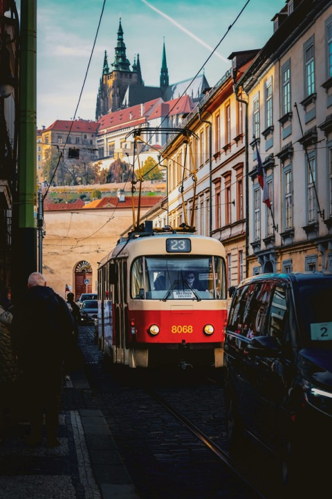

Prag besichtigen: Stadtführer, Reiseführer oder Besichtigungsfahrt?
Ein Reisebuch im Koffer, eine Rundfahrt mit dem Bus, eine Führung über ein Buchungsportal oder eine eigene Stadtführerin: Jede Art, Prag zu entdecken, kann etwas anderes. Hier steht, was sich wofür lohnt, wo die Grenzen liegen und wie Sie die Varianten kombinieren.

Lesezeit 9 Minuten

Fast jede Anfrage, die mich erreicht, beginnt mit derselben Frage: Brauchen wir für Prag überhaupt eine Führung, oder reicht ein guter Reiseführer? Die ehrliche Antwort hängt davon ab, wie viel Zeit Sie haben, wie gut Sie zu Fuß sind und was Sie in Prag suchen. Wer zwei Tage bleibt und vor allem Atmosphäre will, braucht etwas anderes als jemand, der wissen möchte, warum 1618 drei Männer aus einem Fenster der Burg flogen.
Ich bin Stadtführerin, Sie lesen hier also keine neutrale Stimme. Ich schreibe trotzdem auf, wann ich Gästen von einer Führung abrate, und wofür ein Buch oder eine Rundfahrt völlig genügt.
Fünf Wege, Prag zu entdecken
Wofür sich jede Variante eignet und wo sie an ihre Grenzen kommt.
Reisebücher und Reiseführer: zum Vorbereiten unschlagbar
Ein gedruckter Reiseführer ist der beste Weg, sich zu Hause in Ruhe auf Prag einzustimmen. Sie lesen die Geschichte der Stadt am Stück, markieren, was Sie interessiert, und kommen mit einer Vorstellung davon an, was Kleinseite, Hradschin und Josefov unterscheidet. Auf Deutsch gibt es Prag-Bände von Marco Polo, DuMont, Baedeker und dem Michael Müller Verlag. Die kompakten Bände passen in die Jackentasche, die ausführlichen erklären die historischen Gebäude bis zur Bauphase.
Achten Sie auf das Erscheinungsjahr. Öffnungszeiten, Eintrittspreise und Rundgänge ändern sich in Prag schneller, als Bücher neu aufgelegt werden. Die Prager Burg hat ihre Ticketvarianten in den letzten Jahren mehrfach umgestellt. Praktische Angaben prüfe ich deshalb immer zusätzlich auf den offiziellen Seiten, die ich am Ende verlinke.
Wo das Buch an seine Grenzen kommt: Es sagt Ihnen nicht, dass das Goldene Gässchen um zehn Uhr voller Gruppen ist und um halb neun fast leer, und es sucht Ihnen keinen Weg ohne Treppen. Im Gedränge auf der Karlsbrücke wird das Lesen ohnehin schwierig.
Besichtigungsfahrten: Bus, Boot, Oldtimer und Tram
Besichtigungsfahrten sind ideal am ersten Tag, um ein Gefühl für die Entfernungen zu bekommen, und für alle, die nicht lange gehen können. In Prag haben Sie vier Möglichkeiten.
Hop-on-hop-off-Busse fahren die großen Ziele an, mit Ansagen über Kopfhörer. Die engen Gassen der Altstadt sind für Busse allerdings gesperrt. Sie sehen also vor allem die Uferstraßen und die Burg von unten.
Eine Bootsfahrt auf der Moldau zeigt Ihnen die Stadt so, wie sie am schönsten ist: Burg, Karlsbrücke und Kleinseite vom Wasser aus. Welche Fahrten es gibt und welche sich lohnen, habe ich im Artikel Bootsfahrt in Prag zusammengestellt.
Die roten Oldtimer am Altstädter Ring fahren Sie eine Stunde durch die Stadt. Bezahlt wird meist pro Fahrzeug, nicht pro Person. Fragen Sie vor dem Einsteigen nach Preis und Route.
Mein Tipp für alle, die sparen wollen: die Straßenbahnlinie 22. Sie fährt vom Nationaltheater über die Moldau, durch die Kleinseite und die Serpentinen hinauf bis zur Prager Burg. Ein normaler Fahrschein genügt, und ab 65 Jahren fahren Sie in Prag kostenlos.

Historische Orte und Gebäude: wo eine Führung den Unterschied macht
Prag ist von großen Zerstörungen weitgehend verschont geblieben. Darin liegt der Reiz, und genau darin liegt die Schwierigkeit: An fast jeder Ecke steht ein Haus mit Geschichte, und von außen sehen viele davon gleich aus. Ob Sie vor einem Palast stehen, in dem 1618 der Dreißigjährige Krieg begann, oder vor einem schönen Bürgerhaus, verrät die Fassade nicht.
Am deutlichsten merken Sie das an zwei Orten. Auf der Prager Burg liegen Veitsdom, Alter Königspalast, Georgsbasilika und Goldenes Gässchen auf engem Raum, mit unterschiedlichen Eingängen und Tickets. Im Jüdischen Viertel erzählen die Synagogen und der Alte Friedhof eine zusammenhängende Geschichte, die man ohne Erklärung kaum erkennt. Für diese beiden Orte empfehle ich auch Gästen, die sonst alles allein machen, zwei oder drei Stunden mit jemandem, der sich auskennt.
Zehn Orte, an denen Prager Geschichte passiert ist, mit Datum, Namen und Anfahrt, finden Sie im Artikel Zehn Orte mit Geschichte.
Den richtigen Stadtführer finden: vier Fragen vor der Buchung
Wenn Sie sich für eine Führung entscheiden, lohnt es sich, vorher kurz nachzufragen. Diese vier Fragen stelle ich mir auch selbst, wenn ich für Gäste eine Kollegin in einer anderen Stadt suche.
Eine private Führung kostet mehr als ein Platz in einer großen Gruppe. Bei zwei, drei oder vier Personen ist der Unterschied pro Kopf aber kleiner, als viele denken, und Sie bestimmen, wo Sie stehen bleiben.
Reisebuchungsdienste oder direkt buchen?
Über große Buchungsportale finden Sie in wenigen Minuten Dutzende Führungen, mit Bewertungen, festen Preisen und sofortiger Bestätigung. Das ist bequem, besonders wenn Sie ohnehin Hotel und Flug online buchen. Lesen Sie vorher die Stornierungsbedingungen und wie groß die Gruppe höchstens wird.
Der Nachteil: Den Guide lernen Sie meist erst am Treffpunkt kennen, und Sonderwünsche sind schwer abzusprechen. Ein Teil des Preises geht als Provision an das Portal. Wenn Sie direkt bei einer Stadtführerin anfragen, klären Sie vorher Treffpunkt, Route und Themen, etwa Abholung am Hotel, einen Weg ohne Treppen oder einen Schwerpunkt auf jüdischer Geschichte. Rückfragen gehen dann per E-Mail oder WhatsApp direkt an die Person, die Sie führt.
Meine Empfehlung: kombinieren
Für drei Tage in Prag rate ich meist zu dieser Mischung: Vorher lesen Sie einen Reiseführer und entscheiden, was Sie interessiert. Am ersten Nachmittag fahren Sie mit der Tram 22 oder dem Boot, um die Stadt im Überblick zu sehen. Für die Burg oder das Jüdische Viertel nehmen Sie sich eine Führung, idealerweise am Vormittag, bevor die großen Gruppen kommen. Den Rest erkunden Sie in Ihrem eigenen Tempo.
Wenn Sie diesen Teil mit mir machen möchten: Ich führe privat und auf Deutsch, passe die Route an Sie an und beantworte vorab gern Ihre Fragen.
Offizielle Seiten für aktuelle Angaben
- Prague City Tourism: Public transport (Fahrpreise und Ermäßigungen)
- Dopravní podnik hl. m. Prahy: Fahrpläne und Linien
- Prager Burg: Öffnungszeiten und Tickets